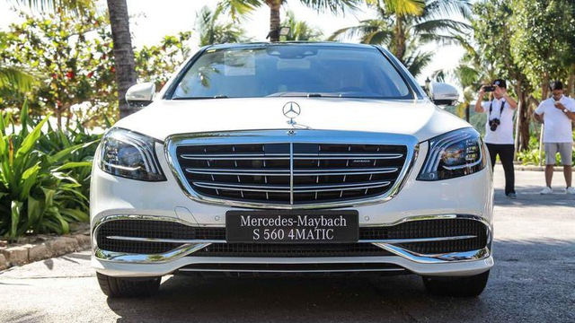
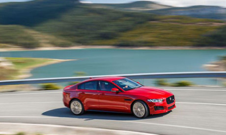
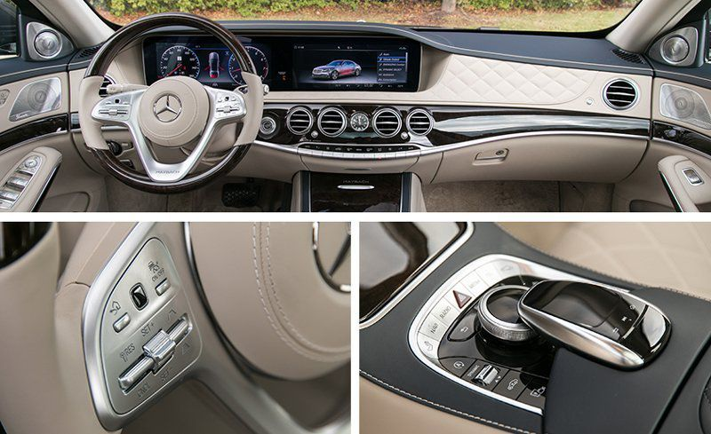
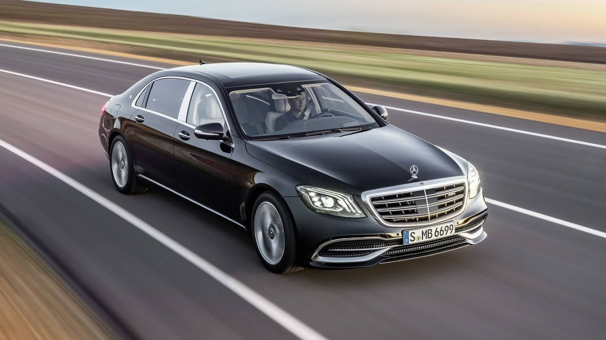

Mercedes Maybach S560 2018
Xe hơi hạng sang Mercedes Maybach S560
Dòng xe siêu sang hiện nay chính là Mercedes Maybach S-Class này hiện đã rất quen thuộc với thị trường nước ta khi có tới 3 phiên bản khác nhau chính là Maybach S600 , Maybach S500 và phiên bản thấp nahats Maybach S400 này . Giờ đây trong dòng xe Maybach này lại xuất hiện thêm phiên bản Maybach S560 , được hãng cho ra đời để thay thế cho phiên bản Maybach S500 cũ của nó. Cùng với đó thì mức giá của mẫu xe Mercedes Maybach S560 này hiện vẫn chưa được hãng xe Mercedes đến từ nước Đức này công bố nhưng hãng vẫn luôn hứa hẹn rằng sẽ tăng sức ép mạnh mẽ lên các đối thủ khác trong phân khúc sedan hạng sang kích thước lớn hiện nay , giờ đây người tiêu dùng có thể tiếp cận 1 sản phẩm có cùng tầm giá với các mẫu xe khác BMW 7-Series, Audi A8, Lexus LS, Jaguar XJ… mà độ sang trọng lại vượt trội hơn cùng với đó danh tiếng và đẳng cấp của người tiêu dùng được nâng lên 1 tầm cao mới
Những điểm nhấn bên ngoài của chiếc xe Mercedes Maybach S560 2018
Mercedes-Maybach S560 2018 thế hệ mới nhất này đã tạo ra được điểm nhấn khác biệt với phiên bản Maybach S500 cũ chính là ở việc logo chữ M được hãng cho thiết kế lồng vào nhau được đặt ở trên cột chữ C cùng cản trước có kích thước được mở rộng hơn , cột B cũng được hãng cho mạ bằng lớp crome sáng bóng hơn .Bên cạnh đó thì hãng cũng cho xuất hiện thêm mặt lưới tản nhiệt của chiếc xe này là kiểu dáng 3 thanh nan kép được đặt nằm ngang cùng với 1 thanh dọc ở chính giữa chiếc xe Mercedes-Maybach S560 2018 , ẩn đằng sau thanh ngang chính là những thanh dọc được bổ sung mạ thêm lớp crome sáng bóng hơn , bên dưới lưới tản nhiệt chính là cản trước có thêm những chi tiết mạ crome sáng bóng hơn. Phần đầu Mercedes-Maybach S560 2018 cũng được hãng cho trang bị thêm camera hỗ trợ hệ thống hiển thị 360 độ bên trong xe , còn với phần đuôi xe cũng có cụm đèn hậu LED khá bắt mắt , mang đậm tính thẩm mỹ cao cho chiếc xe này.
Mercedes-Maybach S560 2018 này đã được sở hữu kích thước tương đối lớn với 5.453 mm chiều dài, 1.899 mm chiều rộng, cùng với đó 1.498 mm chiều cao và chiều dài cơ sở cũng đạt mức 3.365 mm. So với những chiếc xe S-Class tiêu chuẩn khác của hãng thì trục xe cơ sở này lại được dài hơn khoảng 200mm , cùng với đó là trọng lượng của chiếc xe trong mức 2220 kg này. Mercedes-Maybach S560 2018 này cũng được hãng cho sở hữu cụm đèn pha ở 2 bên đầu là công nghệ LED Multi-beam, với thiết kế khá bắt mắt cho lần đầu tiên nhìn vào sẽ tích hợp 2 dải đèn LED chạy ban ngày giúp cho người lái có thể lái xe vào ban đêm được an toàn hơn . Với cụm đèn pha của chiếc xe này cũng có khả năng tự động điều chỉnh độ sáng, góc chiếu khi vào những nơi tối , khúc cua đó nhé , tất cả đều giúp cho người lái nhất và tăng thêm vẻ đẹp cho bên ngoài chiếc xe
Mercedes-Maybach S560 2018 Khoang nội thất được thay đổi lớn nhất
Khoang nội thất của chiếc xe Mercedes-Maybach S560 2018 này sẽ được hãng cho thay đổi lớn nhất phải kể tới chính là vô lăng đối diện người lái chính là kiểu dáng 3 chấu phong cách thể thao hơn được xuất hiện dòng chữ Maybach riêng biệt hơn , cùng với đó là các cụm phím điều khiển chức năng được bố trí thêm lại khá lạ mắt so với kiểu dáng sang trọng , cổ điển của phiên bản tiền nhiệm của nó , sự xuất hiện của bảng điều khiển nằm ở vị trí trung tâm chiếc xe cũng được hãng làm cho mới lại tăng thêm nét thu hút cho Mercedes-Maybach S560 2018 . Toàn bộ khoang nội thất của chiếc xe cũng được hãng cho ốp bằng gỗ piano lacquer màu đen bóng khá thanh lịch , hiện đại hơn và sẽ được khâu bằng hình quả trám rất sang trọng , bên cạnh đó còn đi kèm thêm cặp gối rời có logo hai chữ “M” lồng nhau ở hàng ghế sau.
Sự xuất hiện thêm cửa sổ trời siêu rộng với kính đổi màu Magic Sky Control này khá bắt mắt , thêm vào đó là hệ thống đèn viền nội thất của chiếc xe này tự động điều chỉnh với 7 màu sắc và độ sáng tùy theo tâm trạng của người ngồi bên trong , cửa kính xe cũng được hãng cho thiết kế cách nhiệt và màu tối , sẽ mang tới không gian yên tĩnh hơn cho khách hàng có thể nghỉ ngơi 1 cách tốt hơn . Cùng với đó thì hãng cũng cho biết sẽ trang bị hệ thống sưởi ấm cho các bề mặt tựa tay và tay lái khi đi xe vào mùa đông thêm ấm áp , không để bị lạnh tay . Chính giữa của khoang nội thất này được hãng cho trang bị thêm bảng điều khiển nằm ở vị trí trung tâm kết hợp thêm màn hình hiển thị kích thước lớn dành riêng cho hệ thống giải trí của chiếc xe này 1 cách tốt nhất , hãng cũng cho kết hợp thêm hệ thống quan sát 360 độ có thể hỗ trợ lùi xe tìm được chỗ đỗ xe 1 cách nhanh nhất mà không gây ra sự cản trở nào đâu nhé.
Cùng với đó có thêm sự xuất hiện của 4 cửa gió điều hòa bố trí ngay ở hàng ghế trước và hàng ghế phía sau, tăng độ làm mát và lạnh 1 cách nhanh nhất khi vào mùa hè, chiếc đồng hồ cao cấp hiệu IWC được hãng cho đặt ở ngay chính giữa chiếc xe này khá bắt mắt , ấn tượng . Các nút bấm chức năng trên xe cũng được hãng cho hoàn thiện với màu kim loại thiết kế tinh tế ngay bên dưới cửa gió điều hoà. Màn che nắng cho cửa kính sau chỉnh điện và màn che nắng cho cửa sổ ở 2 bên phía sau cũng được hãng cho điều chỉnh bằng điện, tất cả đều là những trang bị tiện nghi nhất bên trong chiếc xe, được hãng cho nâng cấp nhất. Các chi tiết khác cũng được hãng cho ốp gỗ từ bảng táp-lô sẽ thiết kế liền mạch trên cửa xe cùng với đó là các nút bấm điều chỉnh hướng ghế riêng biệt , nhớ vị trí và tư thế ghế riêng đều được đặt trên cánh cửa giúp người ngồi tự điều chỉnh 1 cách tiện nhất . Trên phiên bản Mercedes-Maybach S560 2018 có đủ cả hệ thống sưởi và làm mát ghế ngồi vào mùa hè và mùa đông , nhờ vào việc hãng cho gia tăng thêm trục cơ sở kéo dài hơn phiên bản tiền nhiệm chính vì vậy không chỉ diện tích dành cho hàng ghế sau rất rộng rãi mà còn cả khoang để hành lý cũng như khoang nội thất bên trong được thoáng đãng hơn.
Khả năng vận hành Mercedes-Maybach S560 2018 đỉnh cao của
Về phiên bản Mercedes-Maybach S560 2018 này đã được hãng cho trang bị khối động cơ mạnh mẽ V8 biturbo với dung tích lên tới 4,7l này , từ đó sẽ giúp cho chiếc xe có thể sản sinh ra được công suất cực đại là 335 kW [455 hp] tại 5250 – 5500 vòng/phút cùng với mô men xoắn cực đại lên tới 700 Nm tại 1800 – 3500 vòng/phút. Sự kết hợp của khối động cơ mạnh mẽ cùng với hộp số tự động 9 cấp mới nhất này càng giúp cho chiếc xe có thể tăng tốc 1 cách mạnh mẽ hơn , chỉ với khoảng thời gian 5 giây để đi từ 0-100km đó nhé trước khi đạt tới tốc độ cực đại là 250km/h . Cùng mức tiêu hao nhiên liệu đạt được là 8,9 lít/100km, mức khí thải CO2 207g/km , đây quả thực là 1 chiếc xe mang lại tính hiệu quả kinh tế cao mà còn rất biết bảo vệ môi trường
Công nghệ tiên tiến , đỉnh cao của phiên bản Mercedes-Maybach S560 2018
Ở phiên bản Mercedes-Maybach S560 2018 này đã được hãng cho trang bị rất nhiều những công nghệ an toàn tiên tiến trên chiếc xe này bao gồm: hệ thống chống bó cứng phanh ABS; hệ thống hỗ trợ lực phanh khẩn cấp BAS; chức năng chống trượt khi tăng tốc ASR giúp ích cho người lái sẽ lái xe 1 cách ổn định hơn không bị trơn trên mặt đường đang đi ; chức năng ổn định thân xe điện tử ESP . Vẫn chưa hết đâu nhé hãng cũng trang bị hệ thống khóa cửa nằm ở vị trí trung tâm chiếc xe kết hợp cùng chức năng tự động khóa cửa xe lại khi đang chạy và mở khóa cửa ra trong những trường hợp khẩn cấp đó nhé, giúp ích và bảo vệ sự an toàn cho bất kỳ hành khách nào khi ngồi trên xe. Việc hãng cho chiếc xe Mercedes-Maybach S560 2018 này còn được hãng cho bổ sung thêm hệ thống hỗ trợ quan sát khi đáng lái xe vào ban đêm Night View Assist Plus giúp người lái dễ dàng nhận biết rõ hơn các đối tượng khi đang đi trên đoạn đường tối hoặc nhưng nơi có điều kiện khí hậu mưa gió. Tất cả những công nghệ an toàn được hãng cho bổ sung thêm cho chiếc xe Maybach S560 này càng khiến cho nhiều khách hàng yêu thích hơn.